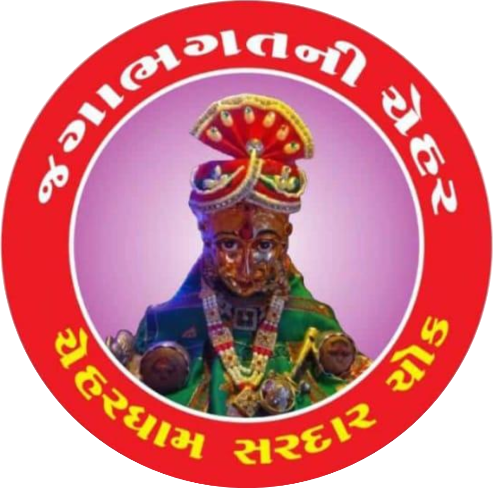
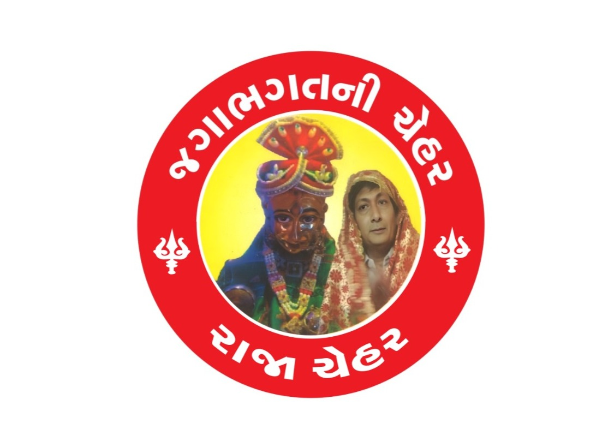
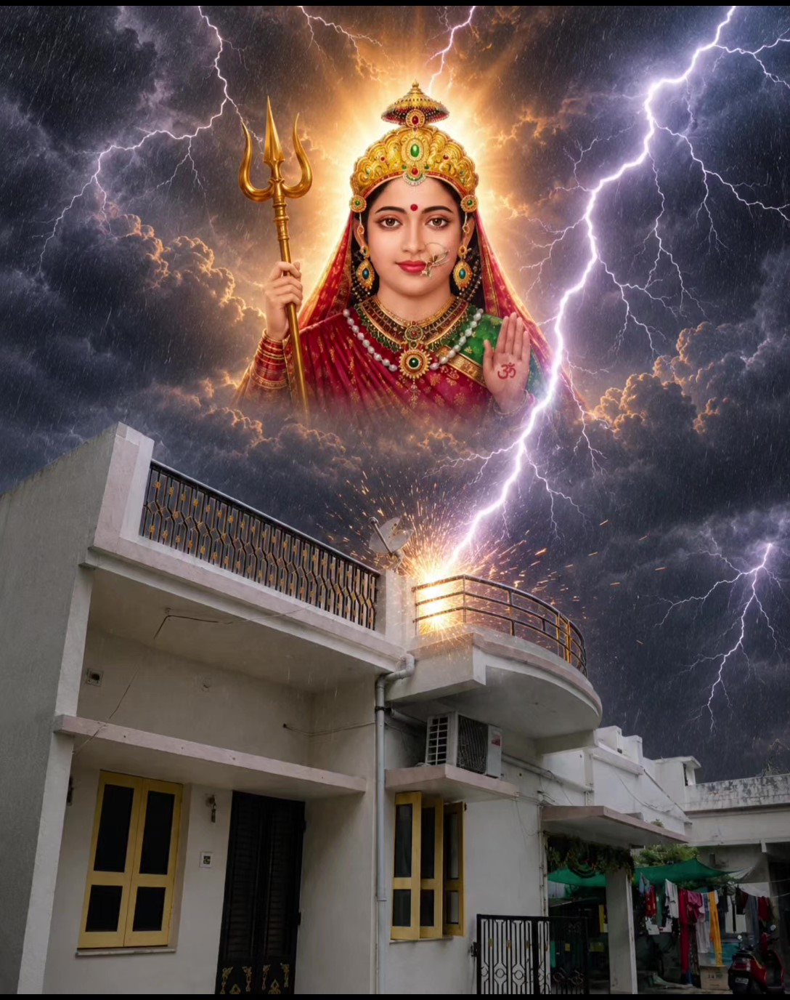
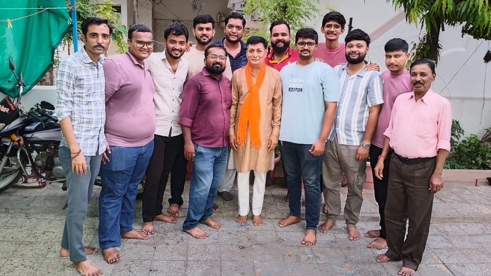

Glimpses
Chehar Dham Galleryમંદિર ની ઝલક
Moments of devotion, festivals and seva from the Shree Chehar Maa Temple premises.
Main Sanctum

Sandhya Aarti Flower Seva
Flower Seva

Festival Utsav
Annakshetra
Yuva Parivar